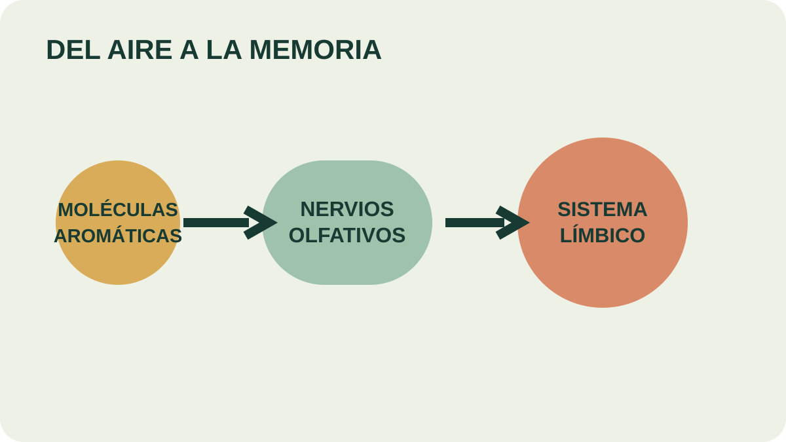

Módulo 24 · 25 minutos
El olfato, la memoria y un límite honesto
Al terminar, vas a poder explicar cómo percibimos un aroma y distinguir una experiencia sensorial de una promesa terapéutica.
Una escena que vuelve antes que las palabras
Un aroma puede recuperar una habitación, una persona o una época con una velocidad desconcertante. La molécula entra por la cavidad nasal; el recuerdo aparece casi al mismo tiempo. Esa conexión tiene una base anatómica. Lo que no se sigue de ella es que un aceite pueda diagnosticar o curar una enfermedad.
De la molécula al impulso nervioso
La nariz es el principal órgano del olfato y contiene . Cuando las moléculas penetran en la cavidad nasal, estimulan esos nervios. El estímulo se convierte en impulsos y se dirige al sistema límbico.
El olfato también interviene en muchas sensaciones que llamamos gusto. Por eso, cuando la nariz está congestionada, los alimentos parecen perder parte de su sabor.
El se ubica debajo de la corteza e incluye tálamo, hipotálamo, hipocampo y amígdala. La relación entre percepción olfativa, emoción y memoria explica por qué una fragancia puede evocar una experiencia personal.

Seguí la señal
Empezá en las moléculas, atravesá la cavidad nasal y localizá el sistema límbico. ¿En qué momento el estímulo deja de ser una molécula transportada por el aire y pasa a ser un impulso nervioso?
Una historia larga no reemplaza una prueba
Los aceites se usaron durante siglos en cosméticos, perfumes y prácticas medicinales. Chinos, hindúes, egipcios, griegos y romanos forman parte de esa historia; en Mesoamérica también se usaron aromas de flores y plantas en baños corporales.
La antigüedad de una práctica demuestra que existió, no que cada afirmación moderna sobre ella esté comprobada. El propio material señala que la explicación terapéutica de la aromaterapia es rechazada por comunidades científicas y médicas, que existen pocos estudios rigurosos y que algunos beneficios reportados pueden depender de mala metodología o .
Lo que sí puede sostener este curso
Podemos hablar de aroma, memoria, preferencia, ambiente y bienestar percibido. Podemos diseñar una experiencia sensorial y una aplicación cosmética. No corresponde diagnosticar, prescribir ni prometer curación.
Esta distinción no empobrece la propuesta: la hace defendible. Una descripción honesta cuenta qué huele, cómo evoluciona la mezcla, qué vehículo usa y qué precauciones requiere. Evita convertir una asociación personal en una afirmación universal.
El material llama a la interacción entre aceites. En este curso, esa idea se trabaja como composición sensorial: cómo una nota modifica, equilibra o sostiene a otra.
Actividad · Reescribir sin prometer
Transformá estas frases: “cura el insomnio”, “elimina la ansiedad” y “trata el dolor”. Redactalas como descripciones sostenibles centradas en aroma, ambiente, preferencia o sensación percibida. Agregá a cada una un límite explícito: no reemplaza evaluación ni tratamiento profesional.
Si diseñamos percepción, necesitamos tiempo
Una mezcla no se revela de una sola vez. Algunas notas llegan primero y desaparecen; otras forman el cuerpo; unas pocas permanecen durante días. La arquitectura aromática empieza en esa línea temporal.
Guardá esta estación
Cuando puedas explicar la idea central con tus propias palabras, marcá el módulo como completado.